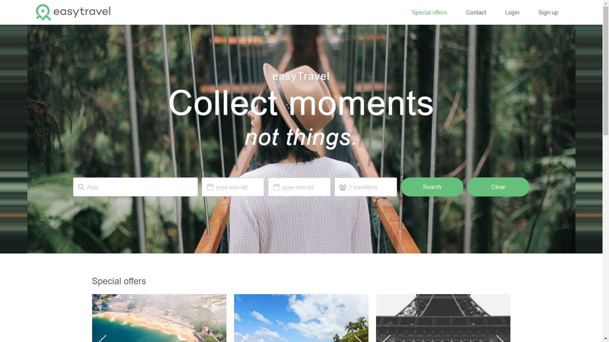
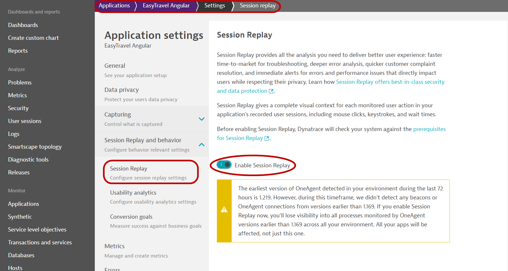
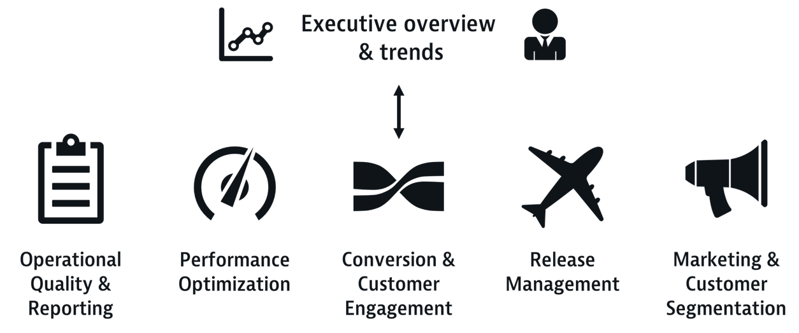

このレポには、BizOps - Bridging the Gap to the Business Hands On Workshopの一環として実施されるラボが含まれています。
ハンズオンの目的は、参加者のためにステップを自動化し、シームレスにすることです。
事前準備
- DynatraceのAccount. フリートライアルの申し込み here
- Chrome ブラウザ
セットアップ
このラボでは、以下のサンプルアプリケーションを使用します。
- サンプルアプリケーション
- easyTravel
- Easy Travelには2つのインターフェースがあります。
- クラシック

- Angular 
学習内容
- ITメトリクスにビジネスコンテキストをもたらす
- セッション分析のために個々のユーザーを特定する
- コンバージョン目標
- セッションリプレイ
- データを可視化し、運用チームと基幹業務チームの連携を強化
- データの活用
- Dynatraceの以下の機能をご紹介します。
- セッションリプレイ
- ユーザーセッションプロパティ
- User Session Query Language (USQL)
- Dynatrace ダッシュボード
この演習の目的は、Dynatraceの基本的なReal User Monitoringの構成を強化し、ITメトリクスにビジネスコンテキストをもたらすことです。そのため、Dynatraceの基本的な設定は行わず、あらかじめ環境を設定しておきます。
- アプリケーションの整理
- JavaScriptフレームワークのサポートを有効にする
- ユーザーアクションの論理的なグループ化（ユーザーアクションネーミングの設定
基本的な設定に興味のある方は、以下のラボリファレンスDigital Experience Management with Dynatraceを参考にしてください。
Dynatrace Real User Monitoringの重要な機能の一つに、異なるブラウザ、デバイス、ユーザーセッション間で個々のユーザーを一意に識別する機能があります。
デフォルトでは、Dynatraceは各新規ユーザーにユニークでランダムなIDを割り当てます。しかし、ユーザー名や電子メールアドレスなどで構成される、より意味のあるカスタムユーザータグを割り当てることができます。
この演習では、ページソースに基づいてユーザーをタグ付けするアプローチを使用します。このユーザータグ付けのアプローチは、アプリケーションのページソースで利用可能なデータを取り込むことで機能します。
Easy Travel Angularアプリでは、ユーザー名を右上に表示しています。これは、DOM要素のテキストやJavaScriptの変数を介して行われます。
Dynatraceで設定するには
- 左のナビゲーションメニューから「Applications」を選択します。
- EasyTravel Angular アプリケーションを選択します。
- 参照」ボタン(...)をクリックし、「編集」**を選択する。
- Capturingヘッダーの下で、User tag**を探す。

- Add user tag rule**をクリックする。
- ソースの種類 **ソースタイプ: **CSSセレクタ
- CSSセレクタのフィールド。
a.greeting - トグル クリーンアップルールを適用 オン にする
- Regexボックスに以下をコピーします。
Hi, (.*+)
- Add user tag ruleボタンをクリックします。
- Save changesボタンを忘れずにクリックしてください。
設定が完了すると、このように表示されます。 
コンバージョンゴールは、ユーザーがユーザージャーニーの重要なマイルストーンを満たしているかどうかを理解するのに役立ちます。例えば、チェックアウトの成功、ニュースレターの登録、デモの登録などです。
この演習では、Easy Travel Angular アプリケーションのコンバージョン目標を作成します。
- 前のアクティビティと同じ画面で、Session Replay and behaviorの見出しをスクロールダウンし、Conversion Goalsを選択します。

- Add goalボタンをクリックし、以下を入力します。
- Name:
Credit card validated - Type of goal: User Action
- Rule applies to: XHR actions
- Rule
- Page URL
- contains
easytravel/rest/validate-creditcard
- 完成した構成は以下のようになります。

- Name:
コンバージョン目標設定の検証
アプリケーションに照らし合わせて結果を確認します。EasyTravel Angular > User behaviorについて

この演習では、セッションプロパティとユーザーアクションプロパティを作成して、Dynatraceに追加データを公開します。これは、分析目的でユーザーに関する追加のコンテキスト（キャンペーンのソース、ユーザーが選択したさまざまなアイテムなど）をもたらすのに便利です。
Dynatraceは、タグを使ってセッションにコンテキストを与える一般的なソフトウェアのリストをあらかじめ定義しています。その一部をご紹介します。
- グーグルアナリティクス
- アドビ・アナリティクス
- ティーリーフ
- などがあります。
これらは、Property packタブにあります。
アプリケーションから抽出できる追加のデータソースについては、custom defined propertiesを使用して、監視するユーザーアクションやユーザーセッションの文字列、数値、および日付のプロパティを定義します。
プロパティの値は、各ユーザーの行動の一部として取得されます。プロパティ値を活用することで、ユーザーのアプリケーションとのインタラクションの詳細を把握することができます。
- 前述のアクティビティと同じ画面で、Capturingの見出しに移動し、Session and Action propertiesを選択します。

- ボタン Add properties をクリックします。
Property packs - Google Analytics/Adobe/UTM codes など
これらはあらかじめ用意されているので、あとはリストから選択するだけです。ここでは、以下のものを選択します。
- ドロップダウンをクリックして、ウェブ・プロパティを選択します。
- Configuration propertiesでは、以下の項目に対応するAdd**ボタンを選択します。
- UTM Source
- UTM campaign
- UTM term

- Nextをクリックします。
- 各項目を展開して、store as user action propertyを切り替えます。

- Create propertiesをクリックします。
Custom properties - 各ユーザーの取引額
- カスタム定義プロパティ "タブを選択します。
- Expression TypeをServer side request attributeを選択します。
- Request attribute name: Revenue
- Display name:
Booking - (auto fill) Key: booking
- Storage type:
- Store as session property
- Click "Save property"
完成した構成はこんな感じです。 
Custom properties - 閲覧した旅行パッケージの金額
上記の設定に続いて、引き続きCSSセレクタタイプのカスタムプロパティを追加します。
- Expression type: CSS Selector
- Data type: Double
- CSS Selector
#summary > div:nth-child(5) > p - Display name:
Trip Cost - (auto fill) Key: tripcost
- Storage type:
- Store as session property
- "Save property"をクリック
完成した構成はこんな感じです。 
Custom properties - 閲覧・予約した旅行先
- Expression type: Server side request attribute
- Request attribute name: Destination
- Display name:
Destination - (auto fill) Key: destination
- Storage type:
- Store as session property
- Store as user action property
- "Save property"をクリック
完成した構成はこんな感じです。 
設定完了画面
すべての設定が完了すると、次のようなセッション/ユーザーアクションプロパティのリストができます。 
この演習では、DynatraceのSession Replayの設定について説明します。
以下の手順で、セッションリプレイを有効にしてください。
- 前のアクティビティと同じ画面で、Session Replay and behaviorの見出しまでスクロールし、Session Replayを選択します。
- Enable Session ReplayトグルON 
- Recoding mask settings タブへスクロールダウン、Mask user inputを選択
- Playback masking settingsタブをクリックし、Mask user inputを選択

- 下までスクロールしSaveをクリック

Dynatraceで収集したデータを視覚化する準備が整いました。この演習では、コンバージョン目標、session/action propertiesが、分析のためのITメトリクスにはるかに多くの洞察力とコンテキストを提供する方法を見ることができます。
これが、これから作成を目指すダッシュボードです。


- 左側のメニューからDashboardsを選択してください。
- Create Dashboardのボタンをクリックし、名前を入力してCreateをクリックします。
- User Sessions Queryタイルをドラッグして、Configure tileをクリックします。

- 以下のようなクエリを入力します。
SELECT FUNNEL(useraction.name like "*journeys*" AS "Journey Search", useraction.name = "click on book now (xhr: /easytravel/rest/journeys/)" AS "Click on Book Now", useraction.name = "click on sign in (xhr: /easytravel/rest/login)" AS "Login", useraction.name="click on book journey (xhr: /easytravel/rest/validate-creditcard)" AS "Submit Payment") FROM usersession
- run query ボタンをクリック。
- 名前の変更
Payment funnel - save changes to dashboard ボタンをクリック。

時間軸での変換

- ダッシュボードをEditモードにして、先に作成したタイルをクリックし、cloneボタンをクリックし、configure tileボタンをクリックします。

- 以下のようなクエリを入力します。
select datetime(starttime, "E HH:mm", "10m"), count(*) as "Conversions" from usersession where useraction.matchingConversionGoals="Credit card validated" group by datetime(starttime,"E HH:mm","10m")
- run queryボタンをクリックします。
- Line chartを選びます。
- 名前の変更
Conversions over time - save changes to dashboardボタンをクリックします。

予約収益

- 上のタイルをクローンして、configure tileをクリックします。
- クエリを変更します。
select sum (doubleProperties.booking) as Revenue from usersession
- run queryボタンをクリックします。
- Single valueを自動的に選択してくれます。
- 名前の変更
Booking revenue - save changes to dashboardボタンをクリックします。

放置されたカートの合計

- 上のタイルをクローンして、configure tileをクリックします。
- クエリを変更します。
SELECT sum (doubleProperties.tripcost) as "Revenue Lost" from usersession where useraction.matchingConversionGoals IS NULL AND doubleProperties.tripcost > 0
- run queryボタンをクリックします。
- Single valueを自動的に選択してくれます。
- 名前の変更
Abandoned cart value - save changes to dashboardボタンをクリックします。

カートの放棄によって影響を受けるユーザー

- 上のタイルをクローンして、configure tileをクリックします。
- クエリを変更します。
SELECT userid from usersession where useraction.name = "click on book journey (xhr: /easytravel/rest/validate-creditcard)" and doubleProperties.booking is null
- run queryボタンをクリックします。
- Single valueを自動的に選択してくれます。
- 名前の変更
Users affected by abandoned cart - save changes to dashboardボタンをクリックします。
DAVIS™️に挑戦しよう!
EasyTravel Angularの実際の予約アプリケーションにアクセスする
- ダッシュボードを開く
- ...Welcome to the Dynatrace Workshop 🔬 ダッシュボードをクリックします。
- Booking Portals:✈ EasyTravel Angularのリンクをクリックします。
- 旅行パッケージの予約
- ユーザーIDは alex または peter です。
- お気づきですか？
- (3) Paymentを複数回クリックしてみてください。
- ブラウザを閉じる前に、以下の作業を行ってください。
- ブラウザの開発者ツールを開く

- コンソールタブに移動します。
- 次のように入力します。
dtrum.endSession()
シナリオ #1
コンバージョンが減少しています。そして、Revenueも減少しています。

しかし、ITオペレーションチームの監視ダッシュボードでは、すべてのシステムがグリーンになっています。 
ITの問題ではないにしても、何かが原因でユーザーが不満を感じ、取引が完了しないのではないでしょうか。
ヒント:
Sample BizDevOps Dashboardのいくつかのダッシュボードは、何が起こっているかを知る手がかりになるかもしれません。

また、Session Replayを使用してユーザーセッションを調査すると、ログやアプリケーションコードの調査では検出できないアプリケーションの事実が判明することがあります。
シナリオ #2
DAVISが異常を検出しました! また、影響を受けて予約プロセスを放棄したユーザーがいることも確認されました。

ヒント:
先ほど作成したダッシュボードには、何がエラーの原因になっているかを理解するための情報がすべて含まれています。
Problemsのタイルから始めて、そこからドリルダウンすることができます。
また、問題に直面しているユーザー名をリストアップしたタイルを使って、個々のユーザーセッションを調査することもできます。
Dynatraceにビジネスアナリティクスを適用することで、以下の目標を容易に達成することができました。

ドロップアウトやユーザーの不満の原因の第一は、エラーです。
エラーの原因はさまざまです。
- サーバーサイドアプリケーション - ビジネスロジック、コーディングエラーなど。
- クライアントサイドアプリケーション（ブラウザ/モバイルアプリ） - JavaScriptエラー、AJAXコール、ポップアップ画面など。
- サードパーティ - CDN、FacebookやTwitterなどの外部プロバイダなど。
さらに言えば、コンテンツ・セキュリティ・ポリシー（CSP）違反 を引き起こすDDoS攻撃やクロスサイトスクリプティング攻撃もあります。 ウェブサイトの応答性を低下させたり、ユーザーのデータや個人情報を盗んだりします。
エラーには多くの種類があり、1つ1つ分析していては効率が悪いため、何を修正すべきか優先順位をつけるのは通常困難な作業です。

このワークフローは、次のような人たちに有益です。
- UXデザイナー／デベロッパー
- カスタマー・エクスペリエンス・リード
- ウェブプログラマー／開発者
分析を始めるためのいくつかのエントリーポイント
- 特定のアプリケーションで発生したすべてのエラーの概要
- 特定のユーザーアクションで発生したエラー
- 特定のユーザーセッションのグループに発生したエラー
- ダッシュボードのタイル
- などがあります。
2つのワークフローを例に説明します。
ワークフロー #1 - 特定のアプリケーションの概要からナビゲートする
- Applications -> Easy Travel Angular -> Errorsへ進みます。
- Analyze errorsをクリックします。
- いくつかのエラーが表示されるので、HTTP requestタブでHTTP 500と表示されているものを選択します。
- dectection rulesを変更することができます。
- ルールの1つは、CSP errorsの検出をカバーしています。

ワークフロー #2 - Navigate from User Sessions
- User Sessionsへ進みます。
- 上のフィルターを使う
- データ設定をより詳細に操作するには、USQLを使用します。
参考
- Automatically detect potential frontend attacks that cause Content Security Policy (CSP) violations
- Ensure unrivaled customer experience with Davis® AI-powered HTTP and custom error analytics
- Abandoned Shopping Cart – Minimizing errors, maximizing revenue
- How to detect impacting 3rd Party API calls with Dynatrace Real User Monitoring (RUM)
- Optimize your marketing campaign investment by leveraging BizDevOps
- Improve user experience with more visibility into CDN-related HTTP errors
Googleは昨年、Core Web Vitalsという取り組みを発表しました。
目標は、「ウェブ上で優れたユーザー体験を提供するために不可欠な品質シグナル」を提供するための測定値を標準化することです。
Googleは最近、これらのメトリクスをユーザーエクスペリエンスシグナルとして検索結果ランキングに含めました。これは、これらのメトリクスが単にあると便利なものではなく、必要不可欠なものであることを示しています。
Dynatraceは、Google Core Web Vitalの測定結果を、アプリケーションのフロントエンドとバックエンド全体のインサイトで補完します。Dynatraceでは、3つのCore Web Vitalメトリクスをすべて活用することができ、数回のクリックで詳細を確認することができます。
ページとページグループの解析ワークフロー
- アプリケーションの概要ページからスタートします（Applicationsに進み、アプリケーション名を選択します）。
- 2. アプリケーションの概要ページには、Top 3 pagesが表示され、ページグループとページのタブがあります。必要な粒度を表示するタブを選択します。
- グループ名を選択すると、選択したグループのページグループ概要が表示されます。
- すべてのページグループを表示」を選択すると、すべてのページグループの多次元分析が表示されます。
分析ワークフロー
- View all page groupsを選択します。

- Performance metricのドロップダウンで、Largest contenful paintを選択します。その他はデフォルトのままです。
- homeをクリックしてください。

- Performanceセクションまでスクロールダウンし、Perform waterfall analysisをクリックします。
- ウォーターフォール分析では、これらのページのルート変更の根本的な動作を分析することができます。ここでは、詳細なパフォーマンスとエラー情報を文脈に沿って表示することができます。
ダッシュボード・ワークフロー
- 画面上部のパンくずを使って、1画面戻る。例：Applications > EasyTravel Angular > Page groups > home
 2.Performanceセクションまでスクロールダウンし、Analyze performanceをクリックします。
2.Performanceセクションまでスクロールダウンし、Analyze performanceをクリックします。 
- 下にスクロールして、Detailed analysis...のセクションに移動します。
- "Analyze by" ドロップダウンから UTM sourceを選択します。
- Performance metric "ドロップダウンから Largest contenful paintまたは First contentful paintのいずれかを選択する。
- Create metricをクリックする。

- Split by UTM sourceを有効にして、5を入力します。

- Create metricをクリックして、メトリックの作成を完了します。
- ダッシュボードにチャート表示できるようになりました。
参考
- Core Web Vitals: Practical metrics for optimal user experiences
- Full support for Google's Core Web Vitals improves your user experience and search rankings
- Optimize modern web applications with automatic insights into pages and page groups
- Business Insights extends support for optimizing Core Web Vitals
- EasyTravel Angularホームページを評価する
- 任意の旅行パッケージを選択し、bookをクリックし、ユーザー名alexとパスワードalex でログインします。

- 名前のAlex Elliotを右クリックし、Inspectをクリックします。
- ハイライトされた行の...をクリックし、Copy > Copy Selectorを選択します。

- これは、Webアプリケーションで定義されている任意のDOM要素に対して行うことができます。
先ほど示したように、2つのリクエスト属性 revenue と destination があらかじめ作成されています。
新しいリクエスト属性の定義
様々なデータソースからリクエスト属性を作成することができます。今回のハンズオンでは、旅行パッケージに申し込んだお客様の忠誠度を公開します。

- Settings > Server side service monitoring > Request Attributes を選択します。
- Define a new request attributeボタンをクリックします。

- Request attribute nameを
loyalty statusとして入力してください。 - データタイプは text のままにしておきます。
- Add new data sourceボタンをクリックします。
- Configure 1st source:
- Request attribute source: Web request URL query parameter
- Parameter name: loyalty
- Saveボタンを押してください。

- Add new data sourceボタンをクリックします。
- 2ndソースの設定
- Request attribute source: Java method parameter
- Select method sourcesボタンをクリックします
- Select the process group: com.dynatrace.easytravel.business.backend.jar easytravel

- Continueボタンを押してください。
- 検索ボックスにこれを入力して、Searchをクリックします。
com.dynatrace.easytravel.business.webservice.BookingService - クラスを選択し、Continueをクリックします。
- Use the selected classのラジオボタンをクリックし、Continueをクリックします。
- Select the method: private void checkLoyaltyStatus
- Finishボタンをクリックします。

- キャプチャードロップダウンでは 2: java.lang.Stringを選択します。
- Saveをクリックします。

- 最終的な設定は以下の画面のようになります。
- 最後に右上のSaveボタンを忘れずにクリックしてください。
セッションプロパティでのリクエスト属性の追加
- 左のナビゲーションメニューからApplicationsを選択します。
- EasyTravel Angularアプリケーションを選択します。
- (...) ボタンをクリックし、Editを選択します。
- Capturingヘッダーの下にあるSession and action propertiesを探す。
- Add propertiesボタンをクリックする
- Custom defined propertyタブを選択する
- Expression type: にServer side request attributeを選択する
- Request attribute name: loyalty status
- Display name:
Member Status - (auto fill) Key: memberstatus
- Storage type:
- Store as session property
- "Save property"をクリックします。
USQLによるデータの可視化
- ステップ2の手順で、ダッシュボードにUSQLタイルを追加します。
- 以下のUSQLを使用し、pie chartを選びます。
select stringProperties.memberstatus, sum (doubleProperties.booking) as Revenue from usersession where stringProperties.memberstatus IS NOT NULL group by stringProperties.memberstatus order by sum(doubleProperties.booking) DESC
- 次のようなタイルが表示されます。

このラボを楽しんでいただき、お役に立てれば幸いです。ご意見、ご感想をお待ちしております。